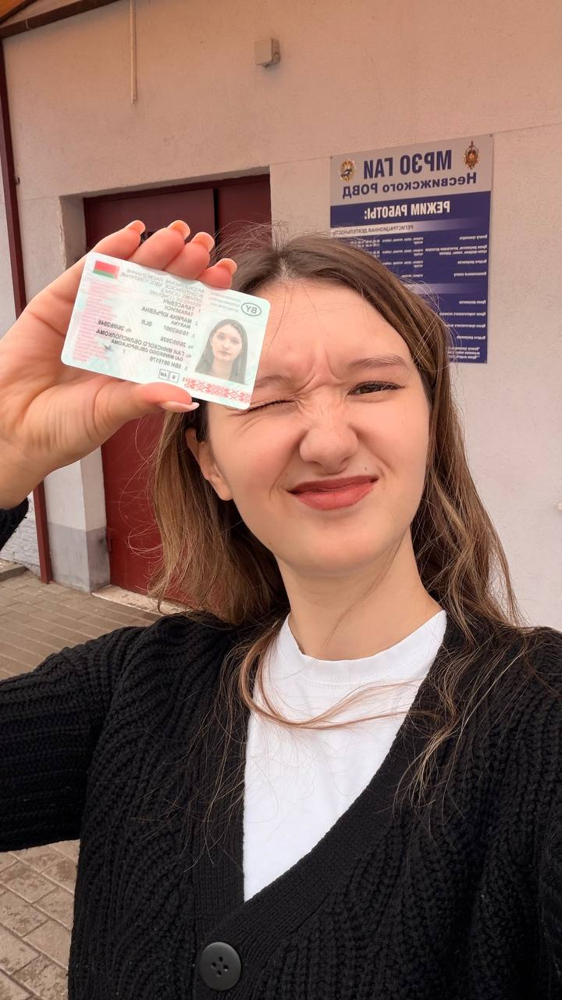
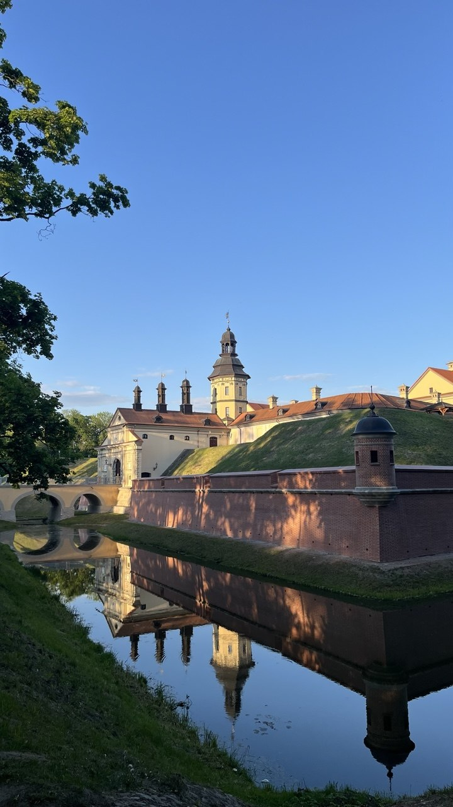
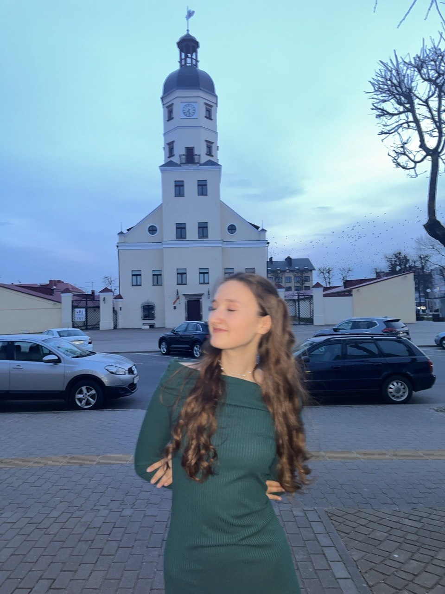
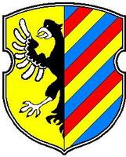
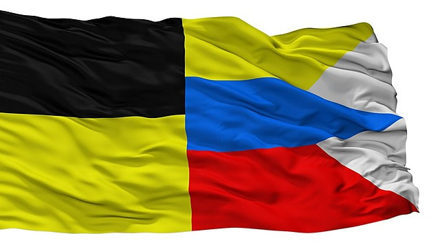
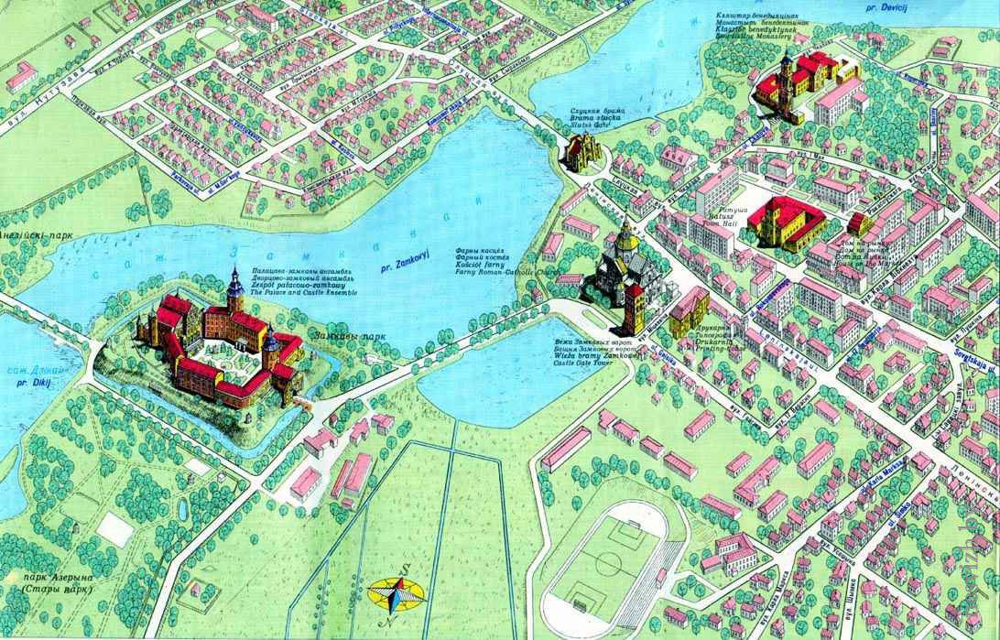

7. Интересные факты
Ура! Я сдала на права!
Поздравляю себя с этим событием! Теперь исследовать родной город и его окрестности станет еще удобнее.

Узнать больше о городе и забронировать билеты можно на официальных ресурсах:
Несвиж — один из древнейших и наиболее известных исторических центров Беларуси. Первое упоминание о городе относится к 1223 году, когда князь Юрий Несвижский участвовал в битве на реке Калка. С XVI века город стал главной резиденцией могущественного магнатского рода Радзивиллов. В 1586 году Несвиж получил Магдебургское право и собственный герб от короля Стефана Батория.
Город богат архитектурными памятниками мирового значения:


Символика города Несвижа утверждена в Гербовом матрикуле Республики Беларусь.


Несвиж расположен в Минской области Беларуси, на реке Уша. Ниже представлена карта города:

Сегодня Несвиж — это современный районный центр и крупнейший культурно-туристический узел Беларуси. В городе развита перерабатывающая и фармацевтическая промышленность (работают фармацевтические предприятия, молочный завод и другие производства). Сфера услуг ориентирована на высокий поток туристов: открыты многочисленные гостиницы, рестораны национальной кухни, музеи и сувенирные лавки.
Поздравляю себя с этим событием! Теперь исследовать родной город и его окрестности станет еще удобнее.

Узнать больше о городе и забронировать билеты можно на официальных ресурсах: